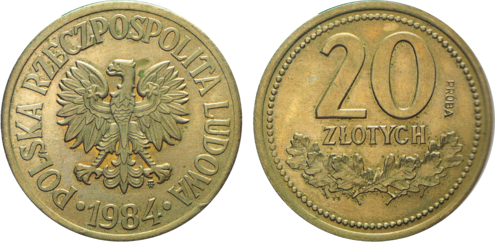
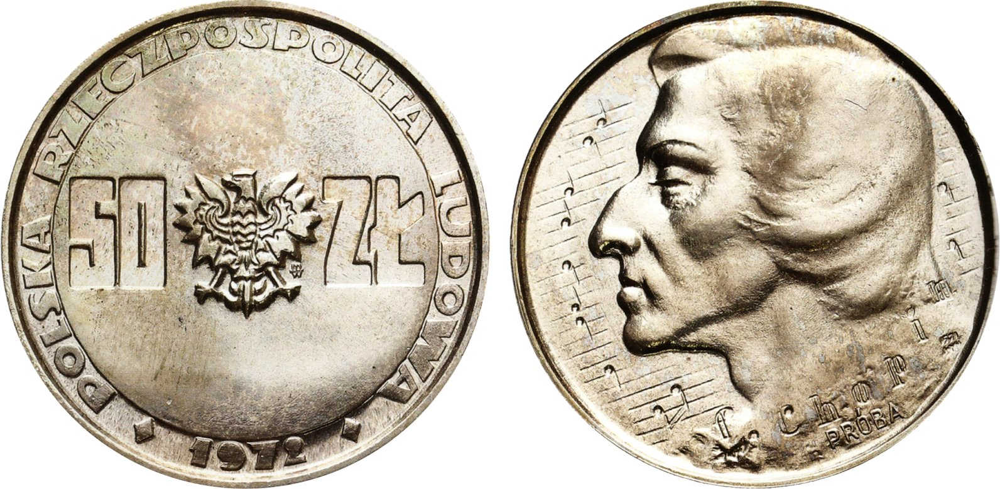
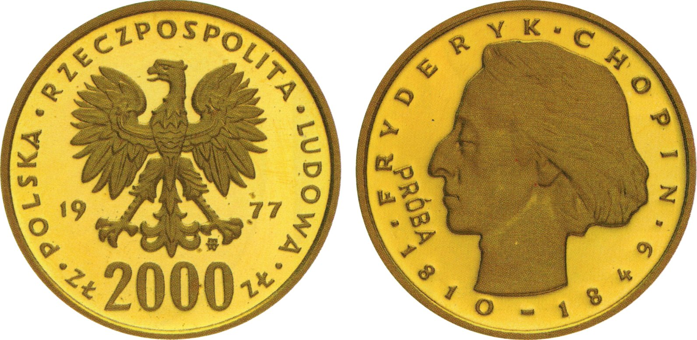
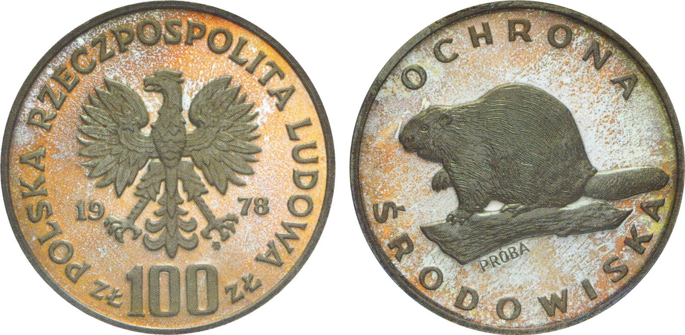

Tytuł niniejszego posta nawiązuje do kultowego dialogu z filmu Psy Władysława Pasikowskiego z 1992 roku:
- „Stopczyk, co Wy tam palicie?”
- „Ja...? Radomskie. Ale jak pan major woli, to Franz ma Camele.”
Radomskie były tanimi, krajowymi papierosami, na które mógł sobie pozwolić każdy, zaś Camele to produkt w owych czasach importowany, luksusowy, na który nie było stać każdego. Z racji swego wieku miałem okazję trzymać w ręku i jedne i drugie - kupując je dla swojej rodzicielki w kiosku Ruchu. Różnica jakości opakowania była zauważalna od razu, smaku na szczęście w tym wieku nie porównywałem ;-).
Ale nie o papierosach ten wpis - a o towarach luksusowych i rzadkich, których sporo można odnaleźć w mennictwie monet próbnych PRL.
Dużo zostało napisane i powiedziane przez zwolenników i przeciwników gradingu monet. W polskiej numizmatyce (i nie tylko) temat dotyczy zazwyczaj monet popularnych, z wielotysięcznymi nakładami, pakowanie których w pudełka może budzić wątpliwości dotyczące ekonomicznego sensu takiego przedsięwzięcia. Postaram się w przyszłości rozwinąć ten temat w oparciu o dane z rejestrów firm gradingowych, jak również wyników aukcyjnych.
Dziś chciałbym skupić się na jednej z bardziej nieoczywistych zalet gradingu monet, za który uważam potwierdzanie faktu istnienia rzadkich pozycji na rynku kolekcjonerskim. Z racji zainteresowań/budowy kolekcji, skupię się na kilku ostatnich przykładach monet próbnych PRL.
Punktem odniesienia dla dalszej części tego wpisu jest fundamentalna pozycja p. Janusza Parchimowicza „Polskie Monety Próbne 1949 - 1990” z 2018 roku - katalog zawierający opisy i zdjęcia ponad 1000 monet. Pozycja jest obowiązkowa dla wszystkich, którzy chcieliby nieco głębiej wniknąć w temat monet próbnych tego okresu.
Przeglądając karty katalogu - w tym zamieszczone tam zdjęcia - możemy zauważyć, że w przeważającej części są one opatrzone dopiskiem GNMP (Gabinet Numizmatyczny Mennicy Polskiej) lub NBP (Narodowy Bank Polski). Nieco rzadziej, że pochodzą one z katalogów Domów Aukcyjnych, zbiorów prywatnych (Z.P.) lub kolekcji kopernikanów p. Oresta Paszkowycza (O.P.). Jednak jak napisał autor we wstępie do swojej publikacji, mimo ogromu pracy wykonanej na przestrzeni ponad 20 lat swoich badań, są obszary, których nie udało mu się ostatecznie zweryfikować, w tym dotrzeć do zdjęć monet, które trafiły na przestrzeni lat w ręce prywatne.
Jako kolekcjonerowi nie raz i nie dwa przebiegła mi w głowie myśl: Jak bardzo prawdopodobne jest, by dana moneta trafiła do mojej kolekcji?
Próbując odpowiedzieć na to pytanie, pomijam zasobność portfela, która w sposób oczywisty może ograniczać nasze możliwości nabycia pewnych egzemplarzy. Nad nią można jednak pracować - i w ten, czy inny sposób zbierać środki na moment, w którym pojawi się oferta sprzedaży. Pytanie tylko: Czy taki moment ma prawo wogóle nastąpić?
O ile - jak wspomniałem powyżej - opisy niektórych zdjęć z katalogu p. Parchimowicza implikują obecność egzemplarzy części monet w rękach prywatnych, to w przypadku wielu innych brak jest powszechnej wiedzy, czy jakiekolwiek sztuki występują w kolekcjach nieinstytucjonalnych, czy też można je znaleźć tylko w zbiorach muzealnych - z natury rzeczy niebędących przedmiotem handlu.
Sporo ze zbiorów muzealnych jest dobrze udokumentowanych (choć i tu można mieć wątpliwości, czy wystarczająco). Nie jest to, niestety, powszechna praktyka dla monet znajdujących się w kolekcjach prywatnych. Wiedza na ich temat jest bardzo ograniczona - dostępna zazwyczaj dla kilku osób z najbliższego otoczenia posiadacza. Dopóki nie trafią na sprzedaż w ofercie publicznej (w ramach aukcji online lub stacjonarnej), mogą przeleżeć w kolekcji lata, a pewnie nawet dekady rozbudzając jedynie fantazje szerszej społeczności kolekcjonerów.
Czy jest zatem sposób, aby uchylić rąbka tajemnicy zawartości kolekcji prywatnych? Okazuje się, że tak - o ile ich właściciele zdecydują się skorzytać z oferty firm zajmujących się gradingiem (NGC, PCGS). Obie z wymienionych firm, w cyklu (co najmniej) tygodniowym odnotowują te informacje w swoich publicznie dostępnych rejestrach. Śledząc zapisy w nich zawarte jesteśmy w stanie w stosunkowo prosty sposób wychwycić pojawienie się nowych, nienotowanych do tej pory monet.
Na chwilę obecną są to podstawowe informacje o monecie: krótki opis zawierający czasem numer z katalogu p. Parchimowicza (czasem błędny 😶) oraz ocena w skali Sheldona. To trochę mało, ale wystarczająco dużo, by móc stwierdzić: jest niezerowa szansa, by poszerzyć kolekcję o taką monetę, jeśli pojawi się w ofercie publicznej! (o ile oczywiście żadne muzeum nie skorzysta z prawa pierwokupu 😉). Do kompletu brakuje jedynie wizerunku monety i ewentualnych dopisków do noty, które ukazałby się na stronie firmy gradującej przy podaniu poprawnego numeru seryjnego certyfikatu. To klucz, bez którego nie pójdziemy dalej. O tym jak można próbować go wydobyć postaram się napisać w jednym z kolejnych wpisów…
Poniżej chciałbym przedstawić kilka wybranych monet, które w ostatnim czasie (połowa grudnia) pojawiły się w rejestrze NGC i które, w mojej skromnej opinii, rozpalą rodzimy rynek aukcyjny, o ile tylko trafią na sprzedaż. Czy tak się stanie, czas pokaże…




Powyższa lista to tylko wycinek tego, co pojawiło się w rejestrach NGC i PCGS na przestrzeni ostatnich dwóch lat (odkąd śledzę ich aktualizacje). Jak widać, w szufladach kolekcjonerów monet (próbnych PRL i nie tylko) nadal znajduje się wiele niespodzianek, które czekają na ten właściwy moment, by zostać zaprezentowane szerszej publiczności. Nie są to może odkrycia na miarę starej polski, jednak mogą sprawić sporo frajdy i ekscytacji kolekcjonerom tego okresu.
Jednocześnie - co mam nadzieję udało się udowodnić - okazuje się, że grading, oprócz trumienkowania monet, może też być narzędziem badawczym 🙂.